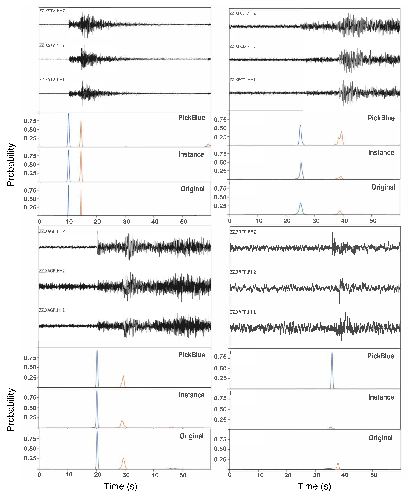
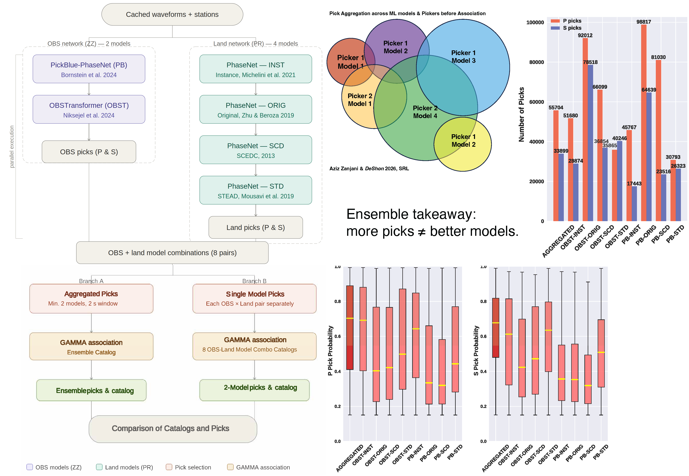
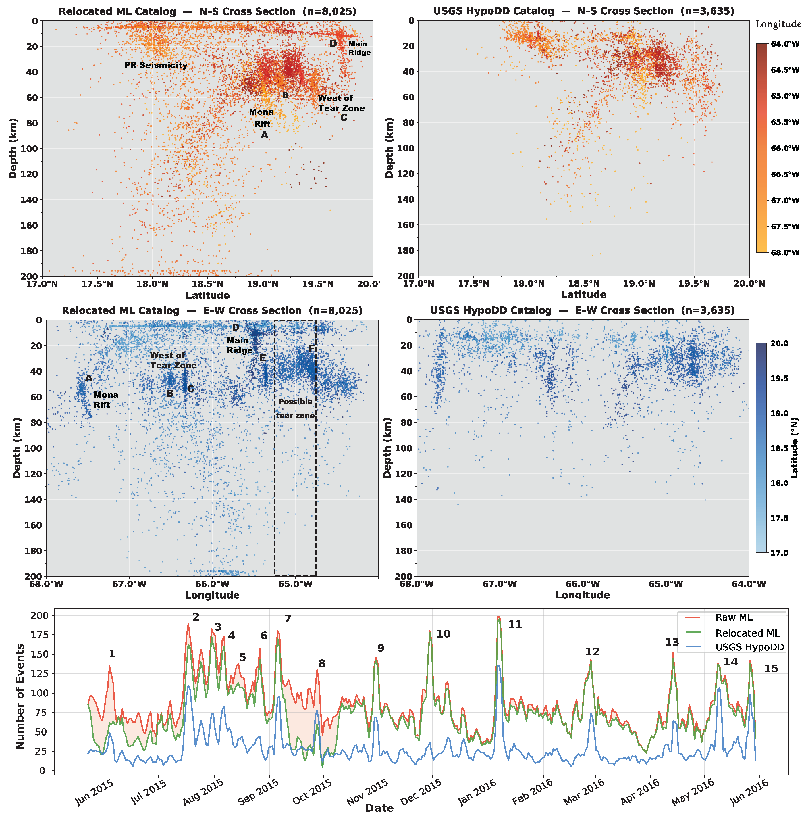
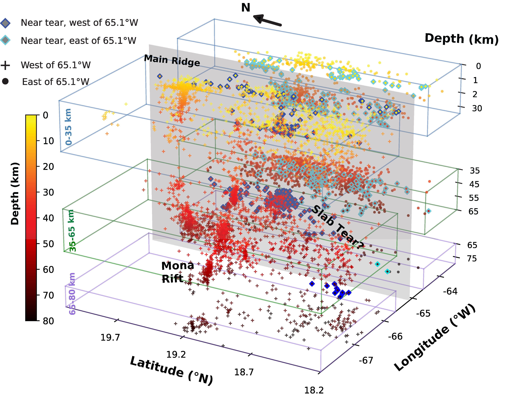

The challenge of listening to the ocean floor near Puerto Rico Trench
Seismic catalogs are the foundation of nearly everything we do in earthquake science. They tell us where faults are active, how stress evolves over time, and where hazard is accumulating. Machine learning has transformed how quickly and completely we can build them, modern ML pickers detect smaller earthquakes, work continuously, and scale to datasets no human analyst could process by hand.
But a quiet problem lurks beneath the surface: most ML models are trained on land seismometer data, and they struggle when applied to ocean-bottom seismometers (OBS). OBS records are noisier, network geometries are sparser, and the signal character is different enough that a model trained on land data can miss events, misidentify phases, or produce picks with systematic biases. For offshore and amphibious experiments, where OBS and land stations are combined into a hybrid dataset, this lack of model generalization limits what we can learn about some of the most seismically active regions on Earth.
The reference catalog problem
When applying ML pickers to Puerto Rico OBS-land data, even models specifically trained on OBS showed meaningfully different performance from one another. This raised a question with no obvious answer: which catalog should we trust as the reference? If every model produces a different result, and no ground-truth catalog exists, the conventional approach of picking the "best" model and running with it becomes untenable. The answer could be: don't pick one, make them all contribute.

P- and S-wave arrival picks from three ML models applied to four earthquakes recorded at the same OBS station in the Puerto Rico region. PickBlue was trained on OBS data; the other two were trained exclusively on land records. The differences in pick timing and detection completeness are not subtle when singnal-to-noise ratio is small, and they compound across the thousands of station-hours in a hybrid network deployment. This variability directly motivated the ensemble approach (Aziz Zanjani & DeShon 2026).
The Pick Aggregator: strength is in agreement
The solution is not to find the single best picker or model for the Puerto Rico Subduction System. It is to make the pickers vote. The Pick Aggregator runs eight combinations of pretrained OBS and land ML models in parallel, drawn from models trained on land data, OBS data, and mixed datasets, and accepts a phase pick only when at least two independent combinations agree on it. This simple consensus rule filters out spurious detections while preserving real arrivals that any single model might miss.
Instead of asking which model is best, ask which detections are robust, and let the ensemble decide.
— The core principle of the Pick AggregatorThe ensemble is particularly powerful for hybrid datasets because different models bring genuinely different strengths. When models agree, confidence is high. When only one model detects a phase, it is flagged as uncertain and discarded. For picks validated by multiple combinations, GaMMA uses the highest-probability arrival time, extracting the best estimate from whichever model was most confident for that particular waveform.

Eight OBS–land picker–model combinations run in parallel across the SeisBench platform (left). Only picks appearing in at least two independent combinations (aggregated picks) are retained for phase association using the GaMMA algorithm. The result is an ensemble catalog that generalizes across instrumentation and data types rather than being optimized for any single one. The shematic representation of the aggregation and performance comparison between ensemble vs. single OBS-land model (right) (Aziz Zanjani & DeShon 2026).
What the ensemble catalog reveals: a slab tear northeast of Puerto Rico
The first major application of the Pick Aggregator was the Puerto Rico and Virgin Islands region, one of the most seismically complex settings in the Caribbean, where the North American plate subducts beneath the Caribbean plate along an oblique and structurally heterogeneous margin. The existing USGS OBS catalog, built from the same dataset using traditional methods, captured the major seismic features but left gaps in completeness, particularly for offshore events near the trench.

North–south and east–west cross sections of seismicity from the ensemble ML catalog versus the USGS OBS catalog generated from the same dataset using traditional methods. The ensemble catalog recovers substantially more events at all depths, with improved spatial coherence of seismogenic structures. The bottom panel compares temporal detection of swarm activity north of Puerto Rico and the Virgin Islands, showing sequences that were only partially visible or missing in the conventional catalog (Aziz Zanjani & DeShon 2026).
The improvement in completeness is not just a number, it changes what we can say about the tectonics. The ensemble catalog reveals seismicity patterns that are simply not resolved in the conventional catalog: clusters of events that define structural boundaries, fill gaps along the subducting slab, and clarify the geometry of active fault systems.

The three-dimensional distribution of hypocenters from the ensemble catalog provides evidence for a slab tear southeast of the Main Ridge with a NNW orientation. This structural feature is not well-resolved in conventional catalogs. (Aziz Zanjani & DeShon 2026).
The most significant finding is evidence for a slab tear southeast of the Main Ridge. The three-dimensional hypocenter distribution defines a coherent NNW-oriented discontinuity in the subducting slab, a structural feature that carries direct implications for stress partitioning along the Puerto Rico Trench and for understanding where future large earthquakes are most likely to nucleate along this margin. This kind of geometric insight requires not just detecting more events, but detecting them with sufficient spatial precision to resolve the structures that host them. An incomplete catalog cannot see a slab tear; the ensemble catalog can.
The New Mexico Tech Seismological Observatory (NMTSO) is expanding its statewide seismic network to improve real-time earthquake monitoring and hazard assessment across New Mexico complex natural and induced seismic environments. Current earthquake catalogs remain incomplete at low magnitudes, limiting our understanding of fault behavior, seismicity drivers, and anthropogenic subsurface effects, particularly as network coverage expands and injection-related activity increases. My current project addresses this need by developing ensemble seismic catalog that captures the vast majority of previously undetected small earthquakes. By lowering the magnitude of completeness by 0.5–1.0 units, we gain new insights into induced seismicity in the Permian and Raton Basins, fault processes in the Rio Grande Rift, natural earthquake swarms, and seismic hazard variability across the state. I first develop and validate a multi-model ensemble seismic catalog for New Mexico (2020–2025) using the Pick Aggregator framework (Aziz Zanjani and DeShon, 2026). To further refine timing and spatial accuracy of seimic events for geoscience discovery phase, I relocate the ensemble ML catalog using independent differential travel times derived from waveform cross-correlation to remove bias introduced by simplified 1-D velocity models. The resulting catalog provide a physically grounded understanding of faulting styles and seismic processes in New Mexico under stress conditions associated with wastewater injection, rifting, and volcanic activity, strengthening the link between advanced ML catalogs and geophysical interpretation.
The ultimate goal is to incorporate an ML workflow into daily processing of seismic waveforms at NMTSO. To do this, we will generate labeled training data using ML ensemble catalog to fine-tune seismic phase pickers for New Mexico’s unique setting. The finetuned model will be rigorously evaluated against an independent reviewed ensemble catalog before integration into operational SeisComp workflows at NMTSO.